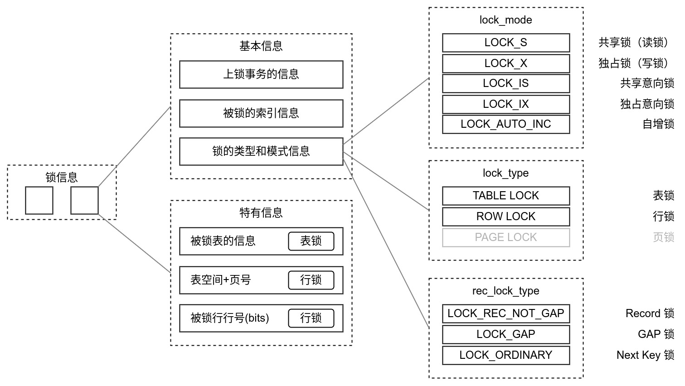

Ch08-MySQL 之 锁
June 29, 2022
1. latch #
是内存结构中的一种轻量级的锁，在 MySQL 数据库中，latch 是用于保护内存中 List Page 完整性的锁结构，latch 可以分为有 mutex、SX rw-lock（spin lock），SX rw-lock 是 MySQL 5.7 的新特性，针对 Page 粒度加的内存锁，有助于提升索引访问效率（针对索引更新的模式）。
2. Lock #

- Gap Lock（间隙锁）锁住的区间均为开区间，间隙锁之间是兼容的，即两个事务可以同时持有包含共同间隙范围的间隙锁，并不存在互斥关系
- Next-Key Lock（临键锁）锁住的区间除了 supremum 伪记录所在区间是开区间外，其余区间均为左开右闭区间；如果一个事务获取了 X 行的 next-key lock，那么另外一个事务在获取相同范围的 X 行的 next-key lock 时，是会被阻塞的
2.1 锁与事务隔离级别 #
| Isolation/Lock | Lock Mode + Lock Type | Rec Lock Type |
|---|---|---|
| Read uncommitted | ||
| Read commited | LOCK_IX + TABLE_LOCK LOCK_X + ROW_LOCK |
LOCK_REC_NOT_GAP |
| Repeatable read | LOCK_IX + TABLE_LOCK LOCK_X + ROW_LOCK |
LOCK_REC_NOT_GAP or LOCK_GAP or LOCK_ORDINARY |
| Serializable |